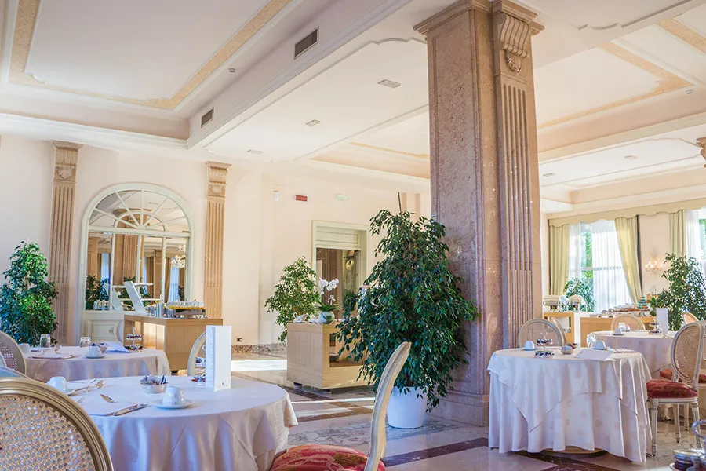
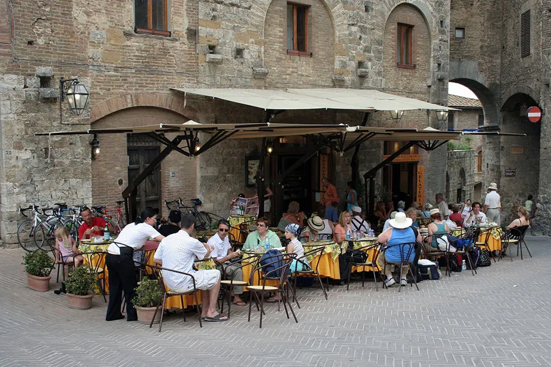

content_paste義大利點餐文化
義大利菜單會這樣分類：
Antipasto(前菜)、Primo(第一道主菜)、Secondo(第二道主菜)、Contorno(配菜)、Dolce(甜點)
在義大利點餐可以從Primo開始，通常是經典的義大利麵食。Secondo包含魚、肉類。用完Secondo就可以點配菜，最後再加上甜點或水果沙拉，這是義大利普遍的點餐方式。起司拼盤（piatto di formaggi）是一道受歡迎的開胃前菜，不同地區也會有不同的特色料理

content_paste義大利飲食文化歷史介紹
義大利半島為世界上重要的美食發源地之一，歷史也相當久遠。最早可追溯到公元前4世紀，經歷了伊特拉斯坎文明、古羅馬文明、拜占庭文明等多個古代國家的薰陶而建立雛形。5世紀開始，義大利半島逐漸分裂成多個小國，在各地交流有限情況下反而催生各自獨特的飲食習慣。14世紀以後，因新大陸的發現，迎來了馬鈴薯、番茄、菜椒和玉米等美洲植物，讓義大利菜的蔬菜含量與日俱增。
19世紀中期義大利開始統一，政府開始正式將適合地中海氣候的農產品科學培育量產化。因為義大利行政區劃在幾百年中發生了重大改動，很多原本屬於區域性的菜餚在傳遍全義大利後融入當地特色，產生了多種極具地方特色的變體。20世紀中期，因加入歐盟，義大利政府對葡萄酒和各類傳統食材制訂法定產區（DOC）等相關法律，需嚴格標註這些食材產自義大利的哪個專有產區。

content_paste義大利餐廳形式
義大利餐廳有分成需訂位的高級餐廳、平價餐廳、站著吃的餐廳，從名字就可以看出餐廳消費，旅遊前，也可以認識一下餐廳種類的義大利文，方便選擇適合自己的用餐形式：
- 平價餐館（Trattoria），價格平民化，用餐比較輕鬆，沒有穿著限制，點餐也自由，蠻多是家庭式經營的平民食堂，販售在地獨特菜餚。
- 平價居酒屋/紅酒餐廳（Osteria），裝潢溫馨、家庭成員經營的簡單平價餐廳，是當地社區的社交場所，菜單會寫在黑板上，是中世紀開始有的聚餐形式，跟Trattoria的差異是Osteria更偏向酒多一點，但到了近代差異就沒那麼大了。
- 高級餐廳（Ristorante），正規餐廳，有服務生、侍酒師提供接受過訓練的服務，通常會是套餐式出餐，餐點精緻、價格偏高，且需事先訂位。
- 披薩店（Pizzeria），披薩專賣店，有些店家也會販售搭配的小點、通心粉，價格很便宜。
- 咖啡廳（Bar/Caffeteria），裝潢非常簡單的餐飲櫃檯，通常義大利人會直接站在櫃檯喝一杯 Espresso、餐前酒，搭配麵包或小點心的地方，早餐和傍晚時刻都是人潮聚集之時，到了半夜就會變成義大利人聊天的酒吧。